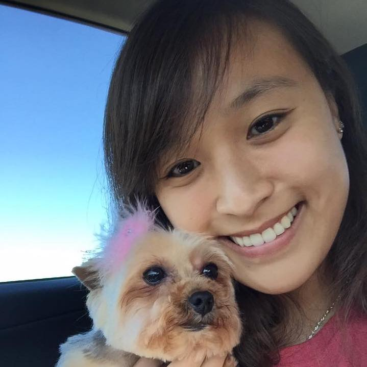

About Me

Hello, and welcome to my page. My name is Jennifer, and I am currently attending San Jose State University. When I was younger, in order to please my parents, I originally wanted to be a pharmacist. After completing most of the pre-requisits to go on to medical school, I decided that becoming a pharmacist was never going to make me happy, so I started to take different classes.
In 2015 I took my first Circuits class, and fell in love with engineering. in 2016, I transfered from CCSF to SJSU for Electrical Engieering. After completing about 2 and a half years of EE, I realized that there was a lot of coding involved. I then took my first Java class in 2018 to have a better understanding of coding, and quickly became addicted, that I decided to also minor in computer science.
After a year into coding in java, I felt like there are more languages that I have yet to learn. That was when I looked into coding bootcamps, and attended some lessons throughout the bay area before deciding to attend the UC Berkeley full stack flex program. This year will be my last semester at SJSU, and in March, I am hoping to obtain my certificate for the UCB bootcamp as well. Thanks for reading!